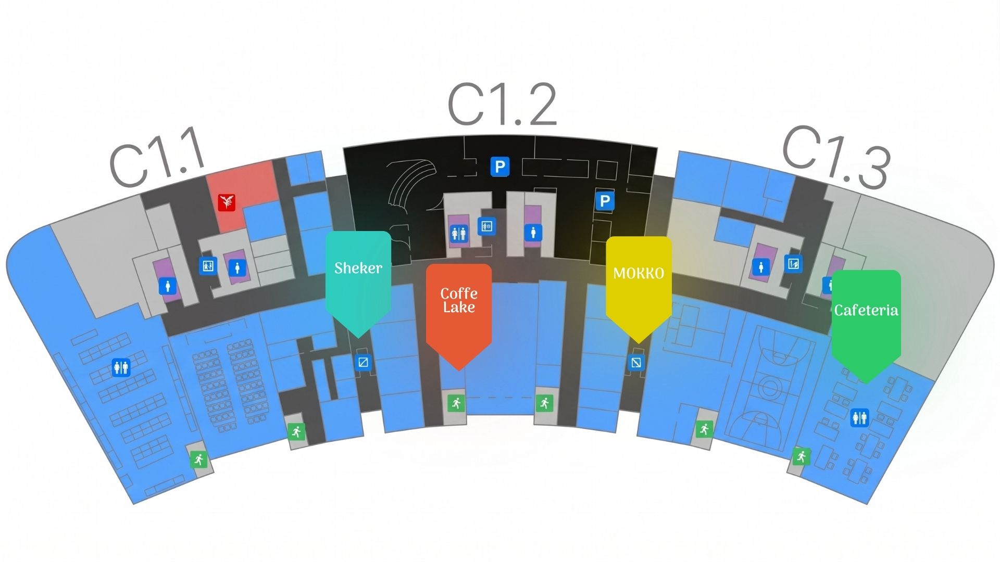

All spots, one page
Cafeteria, Coffee Lake, Sheker, and Mokko — addresses and hours in one place instead of four.
Four dining spots, their opening hours, and menus in one place so you don't waste a break searching.
All four spots sit in the same C1 building — pin colors match the dots above.

Cafeteria, Coffee Lake, Sheker, and Mokko — addresses and hours in one place instead of four.
Every spot's opening hours are listed on the Dining Spots page, so you don't hit a closed door on your break.
Check dishes and prices on the Menu page first, then decide where your break is best spent.